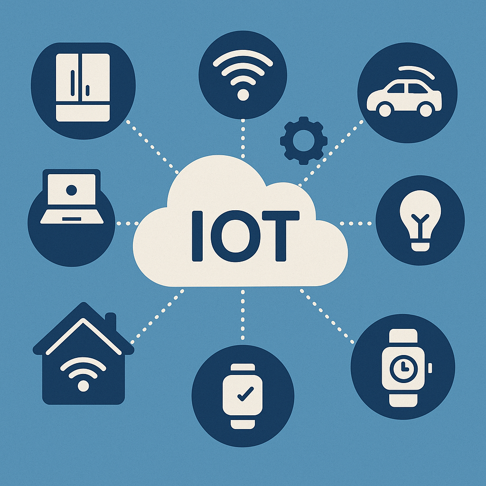

Introduction
The Internet of Things (IoT) refers to the network of interconnected devices that communicate and exchange data with each other through the internet. It enables physical objects—such as home appliances, wearable gadgets, and industrial machines—to collect, transmit, and act on data without human intervention, improving efficiency, automation, and decision-making.
What is IoT?
IoT, or the Internet of Things, is a system of physical devices that are embedded with sensors, software, and other technologies to connect and exchange data with other systems and devices over the internet. These devices range from simple household items to complex industrial tools. IoT allows for seamless data collection, real-time communication, and automated actions based on environmental inputs or user behavior.
Benefits and Examples
The primary benefits of IoT include enhanced automation, improved operational efficiency, better resource management, and increased convenience in everyday tasks. For example, smart home systems allow users to control lighting, heating, and security through mobile apps. Wearable health monitors track vital signs and send alerts for abnormal conditions. In industrial settings, IoT enables predictive maintenance and process optimization.
Common IoT Components
- Sensors
- Network connectivity modules
- Edge devices or hubs
- Cloud computing platforms
- Mobile or web applications
- Data analytics engines
- Actuators and controllers
For a deeper understanding of how these components work together, see the topic: IoT Architecture.